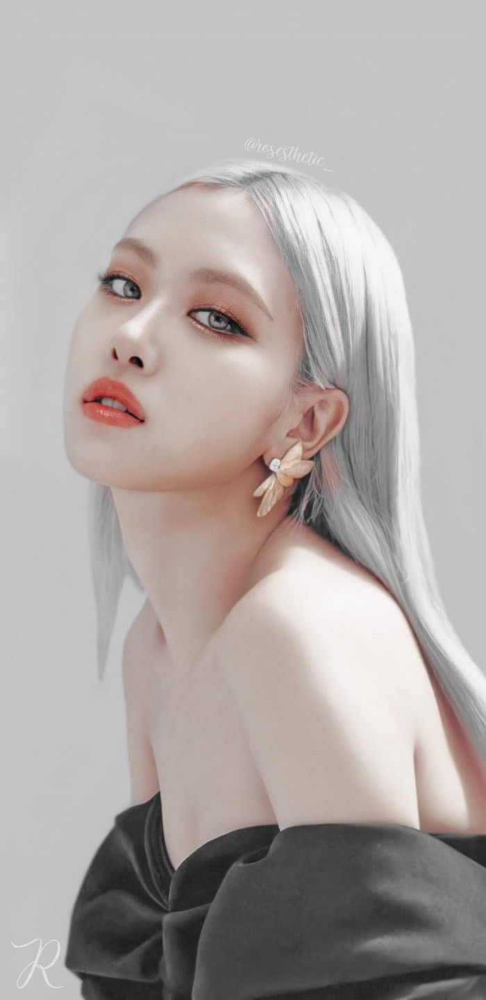

| About The Developer |
Devloper's Note
Hi Everybody,
It's me Laasya, I hope Everyone is enjoying my app , And if it had gave you any motivation then my aim for making this app is successful
About My hobbies
I love Coding. I love to Draw and Paint, I am a good orater. I Have Given Many Speaches since I was 9.
Favorite Bands
| BTS |


| Black Pink |

Favorite Singers
Kim Namjoon
.jpg)


Kim Namjoon is a south Korean Rapper also Known as RM (Rap Monster). He leads a band named BTS (Bangtan Soneyeondan / Bangtan Boys)
Kim Seok Jin


Kim Seok Jin is a south Korean Singer mononymously Jin. He is the Oldest Member in the group (BTS)
Min Yoongi


Min Yoongi is south korean rapper also known as Suga (Agust D as solo Artist). He is a songwriter and record producer , managed under big hit.
Jung Hoseok


Jung Hoseok is a south Korean Rapper also Known as J-Hope. He is also know as the sunshine of BTS, who often introduces himself by the follwing words "You Are My Hope , I am Your Hope , I am J-Hope"
Park Jimin


Park Jimin is a south Korean Singer also Known as Jimin. He is known for is eye smile
Kim Taehyung
.jpg)

.jpg)
Kim Taehyung is a south Korean Singer also Known as V. He is known for his Deep Voice
Jeon JungKook


Jeon Jungkook is a south Korean Singer mononymously known as JungKook / JK. He is the youngest member of the group (BTS). He is known for his playfullness yet the passion for work , he also known as golden makanae, kookie, bunny etc....(I guess -_-)
Jennie Kim


Jennie Kim is a south Korean Singer and Rapper. Kim studied in New Zealand at the age of eight for five years, before returning to South Korea in 2010.
Lalisa Manobal


better known by the mononym Lisa, is a Thai rapper, singer, and dancer based in South Korea. She is a member of the South Korean girl group Blackpink formed by YG Entertainment.
Kim Ji-soo


better known mononymously as Jisoo, is a South Korean singer and actress. She made her debut in August 2016 as a member of the girl group Blackpink formed by YG Entertainment.
Roseanne Park

